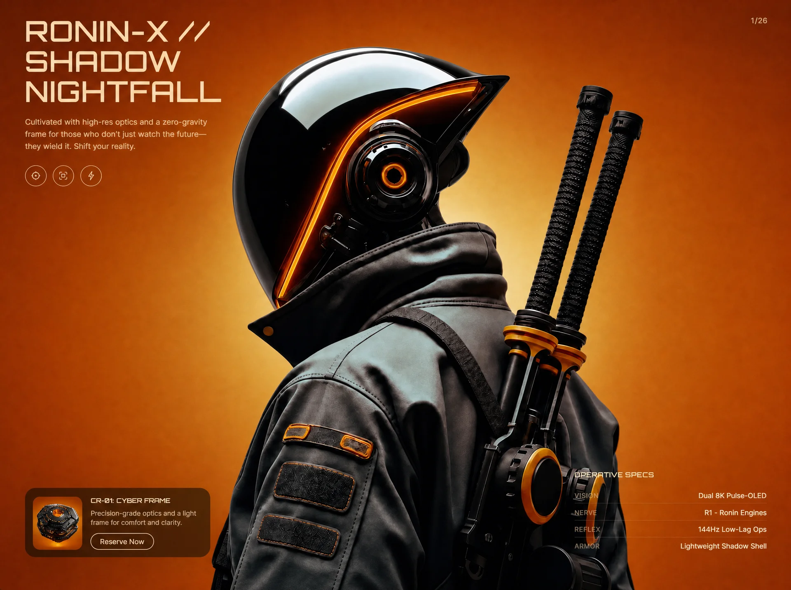

Cyber Ronin
Technologytechnologyyilai-ai 公开页面
收录时间：2026-09-02正文：11,101 字符

本地预览图 · webp
完整提示词
Create a single self-contained HTML file (index.html) — a full-viewport cyberpunk hero section called "Cyber Ronin". No frameworks, no build tools: one file with inline <style> and inline <script>. Page <title>: "Cyber Ronin // Neural Edges". Recreate it EXACTLY as specified below.
=====================
FONTS
=====================
Load two fonts in <head>:
1. Orbitron-Medium from: https://db.onlinewebfonts.com/c/b1314443e183d1cdd77049077c46facc?family=Orbitron-Medium (stylesheet <link>)
2. Google Fonts Inter, weights 300;400;500;600, with preconnect links to https://fonts.googleapis.com and https://fonts.gstatic.com (crossorigin).
- Body font: 'Inter', system-ui, -apple-system, sans-serif.
- All h1/h2/h3 and .heading-font: 'Orbitron-Medium', 'Arial Narrow', sans-serif; font-weight 400; letter-spacing 0.02em.
=====================
COLORS / CSS VARIABLES
=====================
:root {
--cream: #FBDBAF;
--muted: rgba(251, 219, 175, 0.72);
--label: rgba(251, 219, 175, 0.48);
--orange: #E07020;
--card: rgba(10, 8, 7, 0.58);
}
html/body background: #C45A18; color: var(--cream); overflow-x hidden.
=====================
IMAGE ASSETS (exact URLs, used as CSS background-image)
=====================
BASE hero image (day/normal scene):
https://images.higgs.ai/?default=1&output=webp&url=https%3A%2F%2Fd8j0ntlcm91z4.cloudfront.net%2Fuser_38xzZboKViGWJOttwIXH07lWA1P%2Fhf_20260831_115955_2a9adb39-5e9b-4ced-96e2-6900eabe3de9.png&w=1920&q=85
REVEAL hero image (alternate scene revealed by cursor spotlight):
https://images.higgs.ai/?default=1&output=webp&url=https%3A%2F%2Fd8j0ntlcm91z4.cloudfront.net%2Fuser_38xzZboKViGWJOttwIXH07lWA1P%2Fhf_20260831_123709_183f0065-efb2-4bb2-a849-13aaa5af2f3f.png&w=1920&q=85
PRODUCT CARD thumbnail:
https://images.higgs.ai/?default=1&output=webp&url=https%3A%2F%2Fd8j0ntlcm91z4.cloudfront.net%2Fuser_38xzZboKViGWJOttwIXH07lWA1P%2Fhf_20260831_121937_3f02b5a0-5b86-43d9-b30e-03c5e46632e7.png&w=1920&q=85
=====================
STRUCTURE
=====================
<main class="hero"> — position relative, width 100%, height 100vh AND 100dvh, overflow hidden, background #C45A18. Contains:
1. <div class="hero-base-img hero-image-animate"> — absolute inset:0, z-index 1, background-size cover, background-position center center, inline style with BASE image URL.
2. <div class="hero-reveal-img" id="reveal-img"> — absolute inset:0, z-index 2, pointer-events none, inline style with REVEAL image URL, same cover/center sizing. Initial mask (both -webkit-mask-image and mask-image): radial-gradient(circle 0px at -999px -999px, #fff, transparent) — i.e. hidden until the cursor moves.
3. <div class="hero-ui"> — absolute inset:0, z-index 8, display grid, grid-template-columns 1fr 1fr, grid-template-rows auto 1fr auto, padding 36px 44px 40px, pointer-events none (children that need interaction re-enable with pointer-events auto).
Inside .hero-ui:
A) .hero-left (grid-column 1, grid-row 1/-1): flex column, justify-content space-between, align-items flex-start, gap 28px, min-width 0. Contains:
- .hero-copy (max-width 520px, padding-right 56px, pointer-events auto):
* <h1 class="words-pull-up"> with three <span> lines: "RONIN-X //", "SHADOW", "NIGHTFALL". h1: font-size clamp(1.55rem, 3.6vw, 3.15rem), line-height 1.05, uppercase, color var(--cream), text-shadow 0 2px 28px rgba(0,0,0,0.22). Each direct span becomes display:block (.pull-line).
* <p class="fade-up-reveal" data-delay="0.5">Cultivated with high-res optics and a zero-gravity frame for those who don't just watch the future—they wield it. Shift your reality.</p> — margin-top 18px, max-width 340px, 13.5px, weight 400, line-height 1.55, color var(--muted).
* .icon-row (flex, gap 10px, margin-top 22px, class fade-up-reveal data-delay="0.65") with three round .icon-btn buttons: 38x38px, border-radius 50%, 1px solid rgba(251,219,175,0.55) border, transparent bg, color var(--cream), display grid place-items center, transition background/border-color 0.25s ease; hover: background rgba(251,219,175,0.1), border-color var(--cream). Each holds a 16x16 inline SVG (stroke currentColor, stroke-width 1.2):
1. aria-label "Main core": a hexagon path (M8 1.4L13.8 4.7V11.3L8 14.6L2.2 11.3V4.7L8 1.4Z) with a filled center circle (cx 8, cy 8, r 1.35).
2. aria-label "Vision": four corner-bracket paths (M2 5.2V2h3.2 / M14 5.2V2h-3.2 / M2 10.8V14h3.2 / M14 10.8V14h-3.2, stroke-linecap round) plus a center rect (x 5.2, y 5.2, 5.6x5.6).
3. aria-label "Force": a lightning-bolt path (M9.2 1.6L4 9.1h3.5L6.8 14.4 12 6.9H8.5L9.2 1.6Z, stroke-linejoin round).
- <article class="product-card"> (pointer-events auto): width min(320px, 100%), grid with columns 86px 1fr, rows auto auto, gap 10px 14px, padding 12px, border-radius 18px, background var(--card), backdrop-filter blur(18px) (+ -webkit-), border 1px solid rgba(251,219,175,0.08), box-shadow 0 18px 50px rgba(0,0,0,0.28). Contents:
* .product-thumb (grid-column 1, grid-row 1/-1, 86px wide, min-height 86px, border-radius 12px, overflow hidden, background cover/center, aria-hidden) with the PRODUCT thumbnail URL inline.
* .product-body (col 2, row 1): <h2 class="words-pull-up">CR-01: CYBER FRAME</h2> (11px, line-height 1.25, uppercase, cream) and <p class="fade-up-reveal" data-delay="1.05">Precision-grade optics and a light frame for comfort and clarity.</p> (margin-top 6px, 11.5px, line-height 1.45, muted).
* <button class="cart-btn fade-up-reveal" data-delay="1.15">Reserve Now</button> — col 2 row 2, justify-self start, align-self end, 1px solid var(--cream) border, border-radius 999px, padding 7px 16px, 12px / weight 500, cream text, transparent bg, transitions on border-color/color/transform 0.2s ease; hover: translateY(-1px).
B) .hero-page — absolutely positioned top 36px right 44px, text "1/26", class fade-up-reveal data-delay="0.75", 13px, letter-spacing 0.08em, color rgba(251,219,175,0.78).
C) .specs (grid-column 2, grid-row 3, justify-self end, pointer-events auto, width min(340px, 100%)):
* <h3 class="words-pull-up">Operative Specs</h3> — 11px, uppercase, margin-bottom 14px, letter-spacing 0.12em.
* Four .spec-row divs (flex, space-between, align-items baseline, gap 16px, padding 7px 0; adjacent rows separated by border-top 1px solid rgba(251,219,175,0.12)), each fade-up-reveal with data-delay 1.2 / 1.3 / 1.4 / 1.5:
- Vision — Dual 8K Pulse-OLED
- Nerve — R1 - Ronin Engines
- Reflex — 144Hz Low-Lag Ops
- Armor — Lightweight Shadow Shell
.spec-label: 11px, letter-spacing 0.08em, uppercase, color var(--label). .spec-value: 12.5px, cream, text-align right, white-space nowrap.
=====================
ANIMATIONS (CSS)
=====================
1. @keyframes heroImageIn: from { opacity 0; transform scale(1.18) } to { opacity 1; scale(1) }. Class .hero-image-animate: animation heroImageIn 1.2s cubic-bezier(0.25,0.46,0.45,0.94) forwards, animation-delay 0.15s, starts at opacity 0.
2. @keyframes wordPullUp: from { opacity 0; translateY(20px) } to { opacity 1; translateY(0) }. .pull-word: inline-block, opacity 0, translateY(20px); .pull-word:not(:last-child) margin-right 0.3em. When parent gets .words-visible, each .pull-word runs wordPullUp 0.55s ease forwards (staggered by JS).
3. @keyframes fadeUp: from { opacity 0; translateY(14px); filter blur(8px) } to { opacity 1; translateY(0); blur(0) }. .fade-up-reveal starts hidden/blurred; .is-visible runs fadeUp 0.7s ease forwards (delay from data-delay attr set by JS).
4. @media (prefers-reduced-motion: reduce): kill all three animations (animation none, opacity 1, transform none, filter none, all !important).
=====================
JAVASCRIPT (vanilla, IIFE)
=====================
1. SPOTLIGHT REVEAL: on window mousemove (and touchmove with passive:true, using touches[0]), compute x/y relative to #reveal-img's bounding rect and set both webkitMaskImage and maskImage to:
radial-gradient(circle Rpx at Xpx Ypx, #fff 0%, #fff 40%, rgba(255,255,255,0.75) 60%, rgba(255,255,255,0.4) 75%, rgba(255,255,255,0.12) 88%, transparent 100%)
Radius R is responsive: 120 if window.innerWidth < 480, 160 if < 720, else 260.
2. WORD SPLIT: for every .words-pull-up element, split text into words wrapped in <span class="pull-word"> with animation-delay = index * 0.1s. Special case: if it's an H1 containing direct child spans, treat each span as a line (add class .pull-line, keep display block), splitting words per line but keeping ONE continuous word index across lines. Guard with dataset.split so it only runs once.
3. SCROLL REVEAL: two IntersectionObservers — threshold 0.2 for .words-pull-up (adds .words-visible then unobserves) and threshold 0.15 for .fade-up-reveal (reads data-delay, sets style.animationDelay, adds .is-visible, unobserves). Fallback: if IntersectionObserver is unsupported, reveal everything immediately.
=====================
RESPONSIVE BREAKPOINTS (mobile responsive — implement all)
=====================
@media (max-width:1024px): .hero-ui padding 32px 28px 36px; .hero-page top 32px right 28px; .specs width min(300px,100%).
@media (max-width:900px): .hero-ui padding 28px 22px 28px; .hero-page top 28px right 22px; h1 font-size clamp(1.35rem, 7.2vw, 2.4rem); both hero image layers background-position 40% center; .specs width min(280px,100%).
@media (max-width:768px): .hero-ui becomes single column grid (rows auto 1fr auto) with safe-area padding: max(24px, env(safe-area-inset-top)) max(20px, env(safe-area-inset-right)) max(28px, env(safe-area-inset-bottom)) max(20px, env(safe-area-inset-left)); .hero-left spans rows 1/3 with gap 24px; .hero-page uses the same safe-area top/right; .specs moves to row 3, justify-self stretch, full width, margin-top 8px; images at 40% center.
@media (max-width:720px): .hero switches to height auto with min-height 100vh/100dvh; .hero-ui becomes position relative flex column (min-height 100vh/100dvh, justify-content flex-start, gap 28px, safe-area padding with 22/18/24/18px minimums); .hero-left unsets grid placement, full width, justify-content flex-start; .hero-copy max-width 100%, padding-right 48px; copy p 12.5px full width; .product-card full width; .specs full width with margin-top auto and padding-top 4px; .spec-value white-space normal; image layers stay absolute, 40% center.
@media (max-width:480px): gap 22px and tighter safe-area padding (18/16/20/16 minimums); .hero-page 12px font; h1 clamp(1.1rem, 8.5vw, 1.65rem); copy p 12px margin-top 14px; icon-row margin-top 16px gap 8px; icon-btn 34x34; hero-left gap 22px; product-card 72px 1fr columns, gap 8px 12px, padding 10px, radius 14px; product-thumb 72px/min-height 72px/radius 10px; product h2 10px, p 11px; cart-btn padding 6px 14px font 11px; specs h3 10px margin-bottom 10px; spec-row padding 6px 0 gap 10px; spec label/value 11px.
@media (max-width:360px): h1 1rem; product-card columns 64px 1fr; product-thumb 64px/min-height 64px.
Output the complete single HTML file, nothing else.把上面的提示词完整复制到支持长文本的 AI 工具中，再按需要替换品牌名、配色与文案。提示词描述的是整页结构与动效节奏，生成后建议在真实浏览器里检查首屏加载和移动端表现。
来源与版权
该条目来自公开提示词页面，原始出处信息未随页面提供。
提示词文本与预览素材的版权归原作者或原平台所有，本站仅作索引与归档。若你是权利人并希望移除本条内容，请通过联系方式告知。